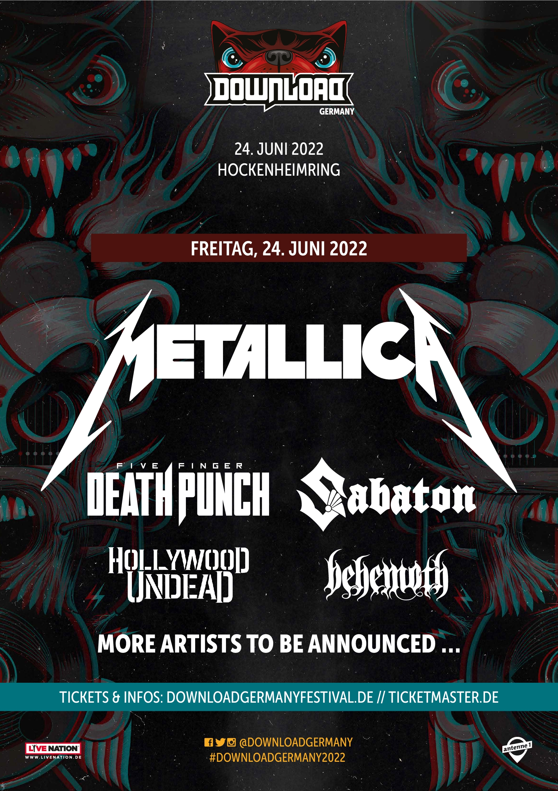

Festivals de l'été 2022
Juin
Juillet
Août
Juin
Nova Rock
Du 9 au 12 juin
A Nickelsdorf, Autriche
Site du festival
Copenhell
Du 15 au 18 juin
A Copenhague, Danemark
Site du festival
Graspop
Du 16 au 19 juin
A Dessel, Belgique
Site du festival
Dowload Festival Germany
Le 24 juin
A Hockenheimring, Allemagne

Site du festival
Frauenfeld Rocks
Le 29 juin
A Frauenfeld, Suisse
Site du festival
Resurrection Fest
Du 29 juin au 3 juillet
A Galicia, Espagne
Site du festival
Juillet
Hils of rock, Sofia Edition
Du 2 au 3 juillet
A Sofia, Bulgarie
Site du festival
Hills of rock
Du 21 au 23 juillet
A Plovdiv, Bulgarie
Site du festival
Août
Keep schearching for now